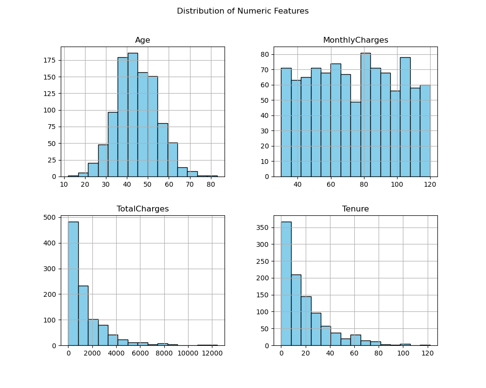

Customer Churn Prediction
Overview
This project analyzes customer attrition in the telecom sector using the dataset from Kaggle titled “Customer Churn Prediction:Analysis”. The goal is to discover the factors that most strongly relate to attrition and to build prediction models that flag accounts with high risk. The work translates analytic results into actions that support retention planning, resource allocation, and service improvements. Deliverables include clear explanations of churn drivers, prediction outputs for at-risk customers, and visuals that nontechnical partners can use in planning.
Problem Statement
Telecom firms face revenue loss and higher acquisition cost when customers discontinue service. Without timely prediction, teams respond after the customer has already left, which reduces the effect of retention efforts and can damage brand reputation. The objective is to create an analytic workflow that
identifies the variables that explain attrition with clarity for business partners
predicts the probability that each active account will discontinue service in the next period
provides ranked customer lists with reason codes so teams can act with targeted offers and service interventions
Data
This project uses a publicly available telecom customer churn dataset sourced from Kaggle. The dataset provides a comprehensive view of customer behavior and churn in the telecom industry, including customer demographics, service usage, contract attributes, billing amounts, and the churn outcome.
Snapshot
Records: 1,000 customers
Features: 10 columns
Target: Churn yes or no
Preprocessing summary
Kept Churn as the dependent variable
Dropped CustomerID since it carries no predictive signal
Converted categorical fields to dummy variables for modeling compatibility
Verified that TotalCharges is approximately MonthlyCharges multiplied by Tenure, with any data quality issues handled during cleaning
Feature dictionary
| Feature | Type | Description | Role |
|---|---|---|---|
| CustomerID | ID | Unique customer key | Excluded |
| Age | Numeric | Customer age in years | Predictor |
| Gender | Categorical | Male or Female | Predictor |
| Tenure | Numeric | Months with provider | Predictor |
| MonthlyCharges | Numeric | Monthly fee | Predictor |
| ContractType | Categorical | Month to month, one year, two year | Predictor |
| InternetService | Categorical | DSL, fiber, or none | Predictor |
| TechSupport | Categorical | Has support yes or no | Predictor |
| TotalCharges | Numeric | Total billed amount | Predictor |
| Churn | Target | Customer left yes or no | Target |
Exploratory Data Analysis
This section summarizes data shape, missing fields, class balance, and key relationships that explain churn.

1. Numeric features distribution
- Age Most customers are between thirty and fifty years old with an approximately normal shape.
- MonthlyCharges Values range from about twenty to one hundred twenty, reflecting different service tiers.
- TotalCharges Values range from zero to around twelve thousand, with most under two thousand. This positive skew suggests many newer or lower cost plans, with a smaller group of long term or premium users.
- Tenure Spans zero to one hundred twenty months and is concentrated at the lower end, indicating many relatively new customers.
2. Categorical features distribution
- ContractType Month to month contracts dominate, suggesting a preference for flexibility.
- InternetService Fiber optic is most common.
- TechSupport With and without support are close to even.
- Gender Female is slightly higher than male in this sample.
3. Target variable distribution
- The churn target is imbalanced, with more customers who churned than those who did not. This calls for attention to evaluation choices and possibly class weighting or threshold tuning.
4. Correlation matrix and key relationships
- Positive Month to month contracts are strongly associated with higher churn Lack of tech support also aligns with higher churn.
- Negative One year and Two year contracts correlate with lower churn, indicating more loyalty and stability.
Tools
Modeling and data: Python (Pandas, scikit learn, matplotlib, seaborn)
Visualization and reporting: Power BI, Excel
Key Methods and Approach
This study evaluated five supervised learning models to identify the most accurate method for predicting customer churn. The models include K Nearest Neighbors, Naive Bayes, Logistic Regression, Decision Tree, and Random Forest.
Goal: Select a reliable predictive method for churn risk with clear business interpretation.
Data variants: Compare accuracy with original dataset without preprocessing and cleaned dataset with standard preprocessing.
Evaluation:
- Overall accuracy
- Precision, recall, and F1 score with special attention to the minority class labeled No
- Practical usefulness for targeted retention actions
Objective
Compare a K Nearest Neighbors classifier on the original dataset and on a cleaned dataset to see how preprocessing changes accuracy and class level metrics
Benchmarks
- Benchmark 1 original dataset without preprocessing
- Benchmark 2 cleaned and preprocessed dataset
Evaluation
- Accuracy
- Precision, recall, and F1 with focus on the minority class labeled No
Objective
Assess Naive Bayes on three dataset variants to understand the impact of preprocessing and class balancing
Benchmarks
- Benchmark 1 original dataset without preprocessing
- Benchmark 2 cleaned and preprocessed dataset
- Benchmark 3 cleaned dataset balanced with SMOTE
Evaluation
- Accuracy
- Precision, recall, and F1 for churned and non churned classes
- Sensitivity to class imbalance
Objective
Predict churn using logistic regression and study the effect of preprocessing and threshold tuning on performance and recall
Benchmarks
- Benchmark 1 model on the unprocessed dataset that includes missing values and unencoded categorical fields
- Benchmark 2 model after preprocessing that fills missing TotalCharges with the mean, scales numeric fields, and applies one hot encoding to categorical fields such as Gender and ContractType
- Benchmark 3 threshold optimization using the ROC curve, selecting a probability cutoff of 0.7 to balance precision and recall
Evaluation
- Accuracy and AUC
- Class level precision, recall, and F1
- Business friendly interpretation through model coefficients
Objective
Use a classification tree to predict churn and provide rules that are easy for partners to understand
Benchmarks
- Benchmark 1 model on the original dataset without preprocessing
- Benchmark 2 model on the cleaned and preprocessed dataset
- Benchmark 3 model selection via cross validation to choose depth and split settings that generalize well
Evaluation
- Accuracy and AUC
- Class level precision, recall, and F1
- Feature importance to highlight drivers of churn
Objective
Improve generalization by averaging many trees and quantify gains from preprocessing and tuning
Benchmarks
- Benchmark 1 model on the unprocessed dataset with missing values and unencoded categories
- Benchmark 2 model after preprocessing that imputes TotalCharges, standardizes numeric fields, and applies one hot encoding for categories
- Benchmark 3 hyperparameter search to find strong settings for number of trees, depth, and split criteria
Evaluation
- Accuracy and AUC
- Class level precision, recall, and F1
- Feature importance to highlight drivers of churn
Results and Findings
1. K Nearest Neighbors
| Metric | Original dataset | Cleaned dataset |
|---|---|---|
| Accuracy | 0.84 | 0.92 |
| Precision for class No | 0.17 | 0.60 |
| Recall for class No | 0.80 | 0.94 |
| F1 for class No | 0.11 | 0.74 |
| Class distribution | Yes: 39 No: 261 | Yes: 39 No: 261 |
Findings
Cleaning the data improved accuracy by eight percentage points
One hot encoding and binning reduced noise and helped the model learn clearer boundaries
Upsampling addressed class imbalance and produced very large gains in recall and F1 for the minority class No
The original data led the model to favor the majority class Yes and missed many true No cases
The cleaned data produced a more balanced classifier that is useful for retention actions
Overall KNN performs much better on the cleaned data. Preprocessing and class balancing were essential to identify at risk customers and to achieve balanced performance.
2. Naive Bayes
| Metric | Original dataset | Cleaned dataset | SMOTE |
|---|---|---|---|
| Accuracy | 0.832 | 0.888 | 0.804 |
| Precision for class Yes | 0.97 | 0.91 | 0.96 |
| Recall for class Yes | 0.83 | 0.96 | 0.81 |
| F1 score | 0.90 | 0.94 | 0.88 |
| Class distribution | Yes: 27 No: 181 | Yes: 13 No: 159 | Yes: 33 No: 217 |
Findings
Cleaning improved overall accuracy and raised recall for churn class Yes from eighty three percent to ninety six percent
SMOTE balancing increased recall for the churn class relative to the original data but reduced overall accuracy to zero point eight zero four
Very high precision on the original data reflects the class imbalance and a conservative decision boundary that missed some true churners
The cleaned dataset delivered the best balance of accuracy and class level metrics
Next steps confirm robustness with stratified cross validation, review calibration, and tune the threshold to align recall with retention goals
3. Logistic Regression
| Benchmark | Accuracy | Precision Class 0 | Recall Class 0 | F1 score Class 0 | Class distribution |
|---|---|---|---|---|---|
| Without preprocessing | 0.94 | 0.65 | 0.42 | 0.51 | Yes: 88 No: 12 |
| With preprocessing default | 0.95 | 0.87 | 0.79 | 0.83 | Yes: 87 No: 13 |
| With preprocessing optimized threshold | 0.92 | 0.63 | 1.00 | 0.78 | Yes: 87 No: 13 |
Findings
Cleaning and encoding improved accuracy from zero point ninety four to zero point ninety five and lifted recall for non churn class zero from forty two percent to seventy nine percent
Threshold tuning increased recall for class zero to one hundred percent with a tradeoff in precision and overall accuracy to zero point ninety two
Removing missing values and encoding categories stabilized training and produced more reliable probabilities
Preprocessed default settings give the best overall balance of accuracy and class level metrics, while the optimized threshold is useful when recall for non churn must be maximized for a specific business rule
4. Decision Tree
| Metric | Original dataset | Cleaned dataset | Cross-validation |
|---|---|---|---|
| Accuracy | 1 | 1 | 1 |
| Precision for class No | 1 | 1 | 1 |
| Recall for class No | 1 | 1 | 1 |
| F1 for class No | 1 | 1 | 1 |
| Class distribution | Yes: 27 No: 223 | Yes: 32 No: 144 | Yes: 30 No: 150 |
Findings
Accuracy, precision, recall, and F1 were all one hundred percent on both original and cleaned data
Heavy class imbalance with about eighty eight percent Yes likely inflated the metrics and reduced generalization
Preprocessing did not change the winning features, but it shifted their relative importance
5. Random Forest
| Metric | Original dataset | Cleaned dataset | Hyperparameter tuning |
|---|---|---|---|
| Accuracy | 0.96 | 1.0 | 0.996 |
| Precision | ~1.0 | 1.0 | 1.0 |
| Recall | ~1.0 | 1.0 | 1.0 |
| F1 score | ~1.0 | 1.0 | 1.0 |
| Train score | 1.0 | 1.0 | 1.0 |
| Test score | 0.96 | 1.0 | 0.996 |
| Class distribution |
Yes: 27 No: 223 |
Yes: 33 No: 217 |
Yes: 33 No: 216 |
Findings
Preprocessing raised accuracy from zero point ninety six to one point zero and produced perfect precision, recall, and F1
Filling missing TotalCharges and encoding categories reduced noise and likely helped the trees form cleaner splits
Class balance shifted slightly toward Yes after cleaning, yet the target remains imbalanced near eighty six percent Yes
Perfect metrics across train and test suggest limited stress on generalization; validate with stratified cross validation and report balanced accuracy and AUC
Hyperparameter tuning delivered accuracy of zero point nine nine six with other metrics unchanged, confirming a strong and stable model while still warranting checks for robustness on unseen data
Conclusion
Our comparison shows that Decision Tree and Random Forest reached near perfect accuracy, while KNN and Logistic Regression also performed strongly at around the low to mid nineties. Naive Bayes trailed at about eighty eight percent on the cleaned data. Cross validation and confusion matrix checks did not indicate overfitting for the tree models, though the class imbalance means we should continue to validate with balanced accuracy and AUC on true holdouts.
For production use, pair one tree based model with one non tree model to balance strengths and reduce risk from unseen patterns. For example, deploy a Decision Tree or Random Forest alongside a KNN or Logistic Regression model, monitor both, and choose actions when they agree or when calibrated churn risk exceeds a threshold. With these models, a telecom company can flag at risk customers early and trigger targeted retention steps such as personalized discounts, proactive service outreach, and plan reviews to protect revenue and improve satisfaction.
Business Implication
Revenue and retention
- Reduce churn through early outreach
- Lift lifetime value with right sized plans
- Shift spend from broad ads to focused saves
Operations and service
- Route high risk accounts to priority care
- Trigger proactive outreach after tickets or outages
- Set stronger service targets for high risk segments
Marketing and offers
- Personalize incentives by churn driver
- Run win back campaigns on persisting risk
- Use uplift testing to target customers who respond
Planning and governance
- Forecast churn driven revenue and program ROI
- Monitor fairness by segment and keep decision logs
- Integrate scores into CRM with clear reason codes
Next Steps
Our results are strong, but the target class is very imbalanced and Naive Bayes underperformed. This limits confidence in real world performance and suggests that the current metrics may be inflated by class skew. To help improve our models, we should consider the following steps:
- Data and labeling
- Collect more recent records to reduce class skew and reflect current behavior
- Balance the target using resampling or class weights and compare to the current baseline
- Audit labels and remove duplicates that can inflate accuracy
- Validation and metrics
- Use stratified cross validation with a true holdout set
- Add balanced accuracy, Matthews correlation, AUC ROC, and AUC PR
- Use time based validation if the data has a natural timeline
- Model robustness and calibration
- Calibrate probabilities for better threshold control
- Tune thresholds by segment to meet business goals such as higher recall for churners
- For Naive Bayes, add interaction features or consider a variant that handles continuous features more flexibly
- Add a gradient boosted tree as an additional comparator
- Feature quality and leakage checks
- Standardize numeric fields and encode categorical fields consistently
- Keep binning only where it helps
- Recheck for target leakage and confirm drivers with permutation importance and SHAP
- Monitoring and operations
- Track live KPIs such as monthly churn rate, save rate, net revenue saved, offer cost per save, and calibration error
- Log predictions with reason codes in the CRM so agents see top drivers
- Schedule retraining and drift checks on a regular cadence
- Summary action
- Deploy one tree model and one non tree model in parallel
- Calibrate and monitor both, then re evaluate once additional balanced data is available
Links
Dataset Source:
Customer Churn Dataset on Kaggle